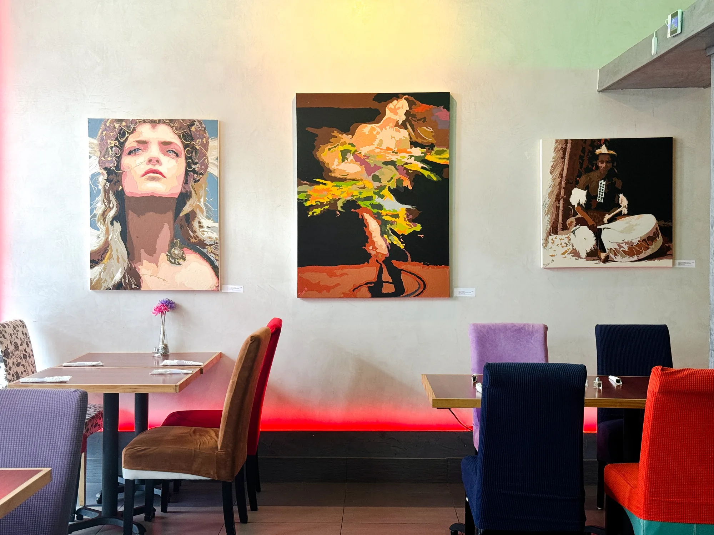
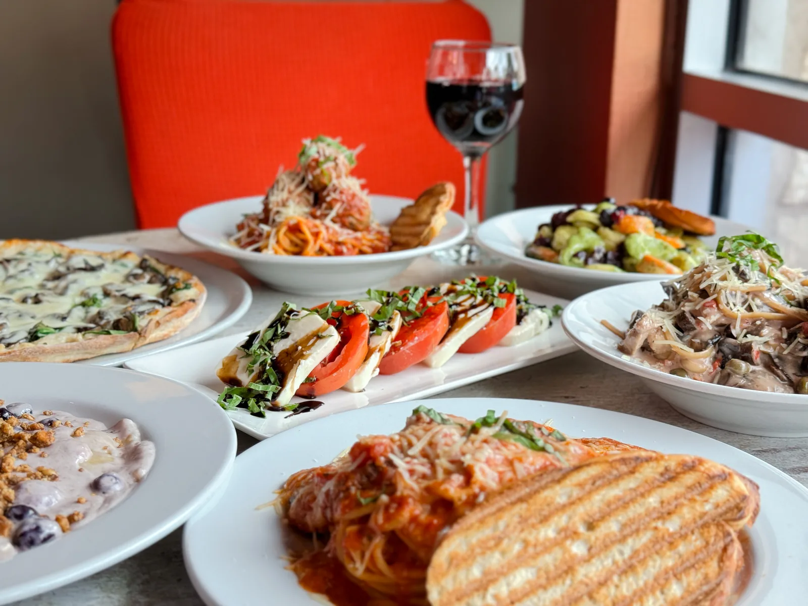
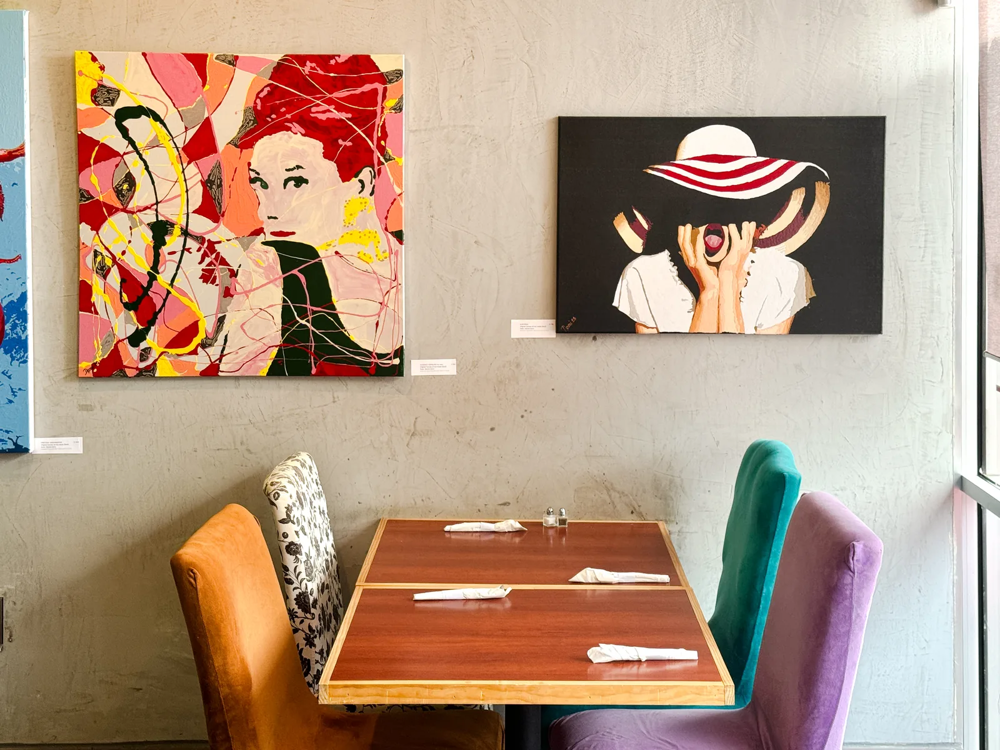
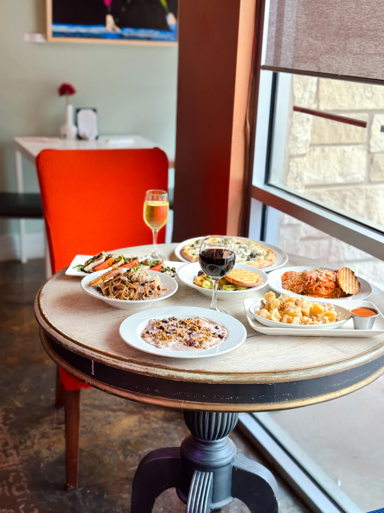

An Italian café with an artist’s soul.
Italian favorites, original art, and an open seat at the table. Discover a family-owned Austin café where every visit feels a little different.
Southwest Austin

Something to savor. Somewhere to stay.
At Milano Café, the art isn’t an afterthought—and neither is the food. Original paintings surround the dining room, adding unexpected color to a familiar ritual: sharing a good meal.
Come for an unhurried lunch, a comforting dinner, or a special evening around the table. Stay a while.

Made to be sharedA little more dolce vita.
From pasta and pizza to familiar Italian classics, our menus make room for long lunches, date nights, and everything in between.
Explore separate lunch and dinner menus, then make your plans.
View our menusFor the table. For the moment.
Dinner with a view.
The paintings on our walls are original works by the café’s owner. They give Milano its spirit: expressive, personal, and impossible to mistake for anywhere else.
See the art while you dine. If a piece catches your eye, ask us about it.
Discover the art
Good food brings us together.
Art gives us something to talk about.
Our tables are for old friends, new conversations, and the kind of evenings you wish were just a little longer.
Come as you are.
Stay a while.
4601 Southwest Parkway · Austin, Texas 78735
Monday–Saturday, 11 AM–9 PM · Closed Sunday
